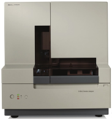
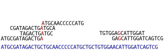
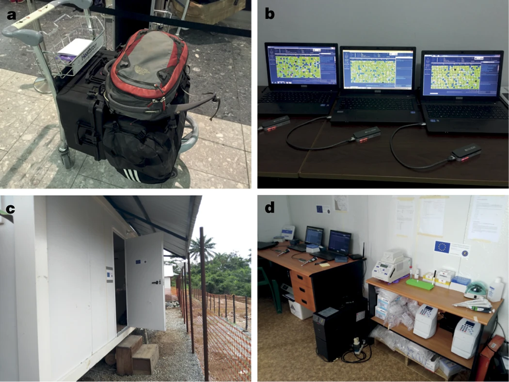

High throughput sequencing
BSX-3139 Molecular Ecology and Evolution
Dr Axel Barlow
email: a.barlow.@bangor.ac.uk
High throughput sequencing
- First generation sequencing (Sanger)
- Second generation sequencing (Illumina)
- Third generation sequencing (PacBio and Oxford Nanopore)
High throughput sequencing

High throughput sequencing

First generation sequencing
Sanger sequencing

Sanger sequencing

Sanger overview

- 700-1000 bp
- High accuracy
- 384 samples
- 1 day
- Dominated for 3 decades
Second generation sequencing
Illumina

Data output
| Platform | read pairs | Read length | data output | Genome coverage |
|---|---|---|---|---|
| MiniSeq | 25 million | 2 x 150 bp | 7.5 Gb | 2 x |
| MiSeq | 25 million | 2 x 300 bp | 15 Gb | 4 x |
| NextSeq 550 | 400 million | 2 x 150 bp | 120 Gb | 33 x |
| NextSeq 2000 | 900 million | 2 x 300 bp | 540 Gb | 150 x |
| HiSeq X | 6 billion | 2 x 150 bp | 1.8 Tb | 500 x |
| NovaSeq X Plus | 52 billion | 2 x 150 bp | 16 Tb* | 4444 x |
- *16 Tb = 16,000,000,000,000 bp
Sequencing by synthesis
- Sample preparation
- Bind DNA to flowcell, generate clusters
- Sequencing by synthesis
- Data analysis (in the machine)
Sample preparation

*Indexes allow multiple samples to be sequenced at the same time
Flow cell

Cluster generation

Sequencing by synthesis

Data analysis (in the machine)

What do we sequence?
[Not an exhaustive list]
- Whole genome sequencing (pure DNA sample from a single individual)
- Reduced representation genome data (RADseq, targeted SNPs, single individual)
- Poolseq (multiple individuals)
- Transcriptome (RNA sample from single tissue/individual)
- Metabarcoding (PCR amplicon, multiple individuals/species)
- Metagenomics (whole genomes, multiple individuals/species)
Whole genome sequencing
Short reads from a single individual can be mapped to a reference genome assembly

Whole genome sequencing

Example: leopard population genomics

Paijmans et al. 2021. Current Biology
Illumina summary
- The current market leader
- Massive output
- But keep an eye on Ultima Genomics
- High accuracy
- Many applications (genome resequencing, RADseq, transcriptomes, metabarcoding)
- Cheap (£9 per Gb)
- Major limitation is the read length
Third generation sequencing
PacBio

Single Molecule, Real-Time (SMRT) sequencing

HiFi reads

PacBio summary
- Single molecule sequencing (no cluster generation)
- Long reads (around 25 kb)
- 75 Gb per SMRT Cell for Revio
- Fantastic for genome assemblies
- Historically high sequencing error, solved by HiFi sequencing
- Still more expensive than Illumina (~£3k per SMRT cell with library prep)
- Price falling rapidly
What can we do with the data?

Nowoshilow et al. 2018. Nature
Oxford Nanopore

How it works

Field based sequencing

Quick et al. 2016. Real-time, portable genome sequencing for Ebola surveillance. Nature
Oxford Nanopore summary
- Variable output, up to Tb's with larger platforms
- Long reads, record is 2.3 Mb!
- Output 20-30 Gb (up to 50 Gb) per Minion flow cell
- High error rate, currently 5-10 % but improving
- Still more expensive than Illumina and PacBio (~£750 for Minion flow cell and library prep)
- True portability and real time sequencing/analysis
- But need to buy sequencer: Minion £4,650 inc. 5 flow cells
Recommended reading
Recommended reading
Recommended reading
Next time:
Gene trees and molecular dating